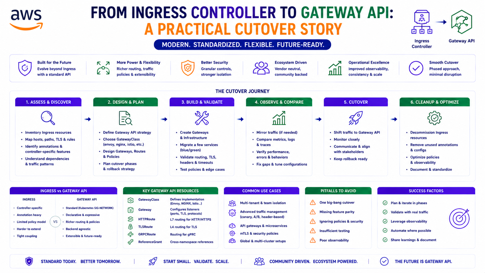

From Nginx Ingress to Kubernetes Gateway API: A Production Cutover Story
Production Deep Dive — Real problems, non-obvious solutions, working code.

TL;DR
| Concern | Nginx Ingress (Before) | Gateway API (After) |
|---|---|---|
| Routing model | Controller-specific annotations | Portable, role-oriented resources |
| Traffic path | DNS → NLB → Nginx pods → Service → Pod | DNS → Gateway LB → Service → Pod (no in-cluster L7 hop) |
| Rewrites | Hidden in annotations and snippets | Explicit URLRewrite filters in HTTPRoute |
| Ownership | Mixed infra/app concerns in one Ingress | Platform owns Gateways, apps own HTTPRoutes |
| Route health | Controller-specific | Standard Accepted + ResolvedRefs conditions |
| DNS automation | Ingress-based | ExternalDNS reads HTTPRoute intent |
| External vs internal | Ingress class annotation | First-class external/internal Gateways |
The migration was done in test first — remove Nginx Ingress entirely, serve all traffic through Gateway API. The hard part wasn't the happy path. It was a healthy route quietly sending traffic to the wrong application.
Why Move Away From Nginx Ingress?
Nginx Ingress served the platform well — host-based routing, path-based routing, regex rewrites, TLS termination, internal and external ingress classes, and a handful of application-specific behaviours. It worked.
But as the platform matured, the Gateway API became the better target for specific reasons:
- Clearer ownership separation — infrastructure teams own load balancer policy, application teams own routing
- Native external/internal Gateway modelling — not an annotation, a first-class resource
- Better alignment with cloud load balancer controllers — a direct path from cloud LB to application targets, without an in-cluster L7 proxy as a required hop
- First-class route status —
AcceptedandResolvedRefsconditions tell you exactly what a route is doing - Cleaner DNS automation — ExternalDNS reads
HTTPRouteresources directly as a source
The deeper reason: Nginx makes routing behaviour implicit. Regex matching, rewrite targets, snippet-based rewrites, and ingress class behaviour quietly become part of the application contract — buried inside annotations that nobody reads until they break. The Gateway API forces those contracts into explicit, versioned route rules. The migration work is the price; visible, reviewable routing is the reward.
The Target Architecture
Two Gateways, by traffic exposure:
Public client
→ Public DNS
→ External Gateway load balancer
→ HTTPRoute host/path rule
→ Kubernetes Service
→ Application pod
Private client
→ Private DNS
→ Internal Gateway load balancer
→ HTTPRoute host/path rule
→ Kubernetes Service
→ Application podReplacing the old model:
Client
→ DNS
→ Nginx ingress load balancer
→ Nginx ingress controller ← the extra in-cluster hop being removed
→ Ingress host/path rule
→ Kubernetes Service
→ Application podEach Gateway is backed by a cloud load balancer through the cloud load balancer controller. Application Helm
charts render HTTPRoute resources and attach them to the correct Gateway via
parentRefs. The headline benefit is not removing Nginx — it is making route ownership explicit
at the Gateway API layer.
Step 1 — Inventory Every Ingress Path
The first rule of this migration: do not move only the obvious paths.
Ingress configurations contain far more than / routing. In this environment, application
behaviour depended on regex paths, prefix paths, rewrite targets, public and private hostnames, admin UI
paths, OAuth login and callback paths, identity provider endpoints, legacy path aliases, and static
configuration endpoints.
For each application, the inventory answered four questions:
- Which hostnames does this app own?
- Which paths does it expose publicly?
- Which paths does it expose privately?
- Which paths depend on Nginx-specific rewrite behaviour?
This mattered most for the admin application. The old Nginx setup had both an external API rewrite and a broad private root route — plus a separate static Ingress that rewrote short configuration paths into backend API paths. Those had to be preserved in Gateway API, not approximated.
Why this matters in production: The paths you forget are the paths that break login at 2am. An OAuth callback path or a legacy alias that lived quietly inside an Nginx annotation does not announce itself — it just stops working after cutover, and the failure looks like an application bug, not a routing gap. Inventory exhaustively before you write a single HTTPRoute.
Step 2 — Translate Nginx Rewrites to Gateway API Filters
Nginx expresses rewrites through annotations:
nginx.ingress.kubernetes.io/use-regex: "true"
nginx.ingress.kubernetes.io/rewrite-target: /api/$1Gateway API has no annotations. It models rewrites as explicit filters on the route:
filters:
- type: URLRewrite
urlRewrite:
path:
type: ReplacePrefixMatch
replacePrefixMatch: /api/A legacy regex admin API route:
/admin/api/(.*) → /api/$1became an explicit Gateway prefix rewrite:
/admin/api/ → /api/Short configuration paths translated into explicit, readable route rules:
/w/configuration → /api/configuration-entries/platform/web
/i/configuration → /api/configuration-entries/platform/ios
/a/configuration → /api/configuration-entries/platform/androidThis was one of the most useful moments in the migration. Nginx let these behaviours hide inside annotations and snippets. The Gateway API forced them into visible, versioned route rules that a reviewer can actually read in a pull request.
Step 3 — Split External and Internal Route Ownership
An early lesson: avoid unnecessary overlap between internal and external routes.
The first attempt attached one route to both Gateways with both public and private hostnames. That works in simple cases — and becomes very hard to reason about when a shared internal hostname accumulates many path rules from many applications.
The cleaner pattern separated them completely:
external route
→ external gateway only
→ public hostname only
→ public application paths
internal route
→ internal gateway only
→ private hostname only
→ private application pathsThis made listener rules easier to inspect and made it obvious which application owned which internal path.
For the admin application, the internal route explicitly covered:
/admin-base-path
/login
/oauth2
/api
/The broad / fallback preserved the old private Ingress behaviour, while the explicit
/login, /oauth2, and /api paths made login and application traffic
unambiguous in the shared internal load balancer rule table.
Why this matters in production: A single route spanning both Gateways feels efficient and becomes a debugging nightmare. When a shared internal hostname has fifty path rules contributed by a dozen applications, you want each application to own its slice explicitly. Clarity of ownership beats brevity of configuration every time.
Step 4 — Disable Ingress Before Removing Nginx
The cutover sequence was the safety mechanism.
We did not remove Nginx first. We proved Gateway API worked, then removed Nginx. The safe order:
1. Add GatewayClasses and Gateways
2. Add HTTPRoute resources for applications
3. Configure ExternalDNS to read Gateway API routes
4. Validate route acceptance and DNS
5. Disable application Ingress objects in test values
6. Remove stale static Ingress templates
7. Exclude Nginx ingress controller apps from the test ArgoCD ApplicationSet
8. Confirm no Ingress resources remain
9. Confirm no Nginx ingress pods, services, deployments, or Argo apps remainEach step kept rollback options open until the Gateway path was proven. Nginx was decommissioned only after the Gateway layer was serving every path correctly.
Why this matters in production: Cutover order is risk management. Remove the old path first and a single missed route is an outage with no fallback. Build the new path alongside the old, prove it, then remove the old — and a mistake is a quick revert, not an incident. The boring sequence is the safe sequence.
Step 5 — Validate With Conditions, Not Hope
Gateway API exposes route health as standard conditions. We leaned on them heavily:
kubectl get httproute -A -o jsonpath='{range .items[*]}{.metadata.namespace}{"/"}{.metadata.name}{"\n"}{range .status.parents[*].conditions[*]}{" "}{.type}{"="}{.status}{" "}{.reason}{"\n"}{end}{end}'Every route had to show:
ResolvedRefs=True
Accepted=TruePlus the platform-level checks:
kubectl get ingress -A # expect: none
kubectl get gateway -A # expect: Programmed=True
kubectl get gatewayclass # expect: Accepted=TrueA clean cutover state:
Step 6 — Validate DNS From the Right Place
Private DNS was the easiest thing to misread.
Internal hostnames resolved correctly inside the VPC but not necessarily from a local machine — which is expected. Private hosted zones need the right resolver path, VPN, or bastion context. Validating private DNS from a laptop and panicking at the result is a classic false alarm.
Validation ran from an environment that could actually use the VPC resolver:
dig api.<test-domain>
dig api.internal.<test-domain>
dig auth.internal.<test-domain>Expected:
- Public API hostname → public load balancer addresses
- Internal API hostname → private load balancer addresses
- Internal identity hostname → private load balancer addresses
Why this matters in production: Half of "DNS is broken" reports are really "I queried private DNS from a place that can't see private DNS." Validate from inside the network that actually uses the records. Otherwise you will chase a resolver problem that does not exist while the real cutover waits.
Troubleshooting Lesson 1 — A Healthy Route Can Still Send Traffic to the Wrong App
This was the most instructive issue of the entire migration. It was not a failed route. It was a wrong route.
The admin application login returned 504 Gateway Time-out. The admin internal
HTTPRoute looked perfectly healthy:
ResolvedRefs=True
Accepted=TrueThe target group was healthy too — the load balancer could clearly reach a backend. Everything the route status could tell us said the route was fine.
The breakthrough came from inspecting the generated load balancer listener rules. A different application still owned this path:
/admin-base-path/*That rule had a higher priority than the admin catch-all route and forwarded the admin login callback to the wrong service. The request never reached the admin pod — which is exactly why the admin application logs were empty. We were looking for the failure in the right app's logs, but the traffic was going to a different app entirely.
The fix: remove the misplaced route from the wrong application's chart and make the admin application explicitly own its login and callback paths.
Accepted=True means the route is valid. It does not prove that
another route isn't taking precedence for the same host and path. When debugging Gateway API on a cloud
load balancer, inspect the generated listener rules — route status describes one route in isolation, but
traffic is decided by all routes together, in priority order.
Troubleshooting Lesson 2 — Preserve Login and Callback Paths Explicitly
OAuth/OIDC flows are path-sensitive in ways that are easy to underestimate.
A single login can start at a friendly login page, redirect to the identity provider, return to a callback
path, request account metadata, and then load static frontend resources. If any one of those paths is
missing or routed to the wrong backend, the symptom is rarely a clean error — it surfaces as a login loop, a
blank page, a 401, a 404, a CSP warning, or a 504.
The important internal paths were made explicit rather than relying on a single / catch-all:
/login
/oauth2
/api
/admin-base-path
/On a shared internal hostname with many applications and many generated load balancer rules, explicit beats implicit every time.
Troubleshooting Lesson 3 — App Context Path and Redirect URI Must Agree
Another failure came from a mismatch between where the application served and what the OAuth callback expected.
The live pod showed:
SERVER_SERVLET_CONTEXT_PATH=/So the correct callback was root-based:
https://api.internal.<test-domain>/login/oauth2/code/oidcnot the older base-path version:
https://api.internal.<test-domain>/admin-base-path/login/oauth2/code/oidcAfter correcting the environment configuration, the application still needed a restart to pick up the new OAuth client registration.
The lesson: during cutover, verify the live pod environment and rendered application configuration — not only the Git values. What's in Git is the intent; what's in the running pod is the reality, and during a migration those two drift more often than you'd expect.
Troubleshooting Lesson 4 — WAF Can Look Like an App Problem
The identity provider appeared to fail for some requests. WAF logs revealed the truth: managed bot rules were blocking HTTP-library-style requests while allowing normal browser traffic.
That distinction is sharp and important. A curl or Java-client request can be blocked while the
exact same flow succeeds in a browser. If you test with a script and it fails, you might "fix" an application
that was never broken.
For identity routes, the WAF allow rule needed to cover the internal identity host and the relevant OIDC paths — authorization, token, userinfo, discovery, and broker callback endpoints.
The lesson: when OIDC breaks behind a cloud WAF, check the WAF logs before changing application code. The request that never reaches your app cannot be fixed in your app.
Troubleshooting Lesson 5 — Restarts Still Matter
GitOps sync applied the desired manifests faithfully — but the running application kept using its previous behaviour until the deployment was restarted.
That is normal for many Spring-style applications: configuration, especially OAuth client registration and redirect URI settings, is read at startup. A GitOps sync changes the desired state; it does not always change the running state.
The final fix required a deployment rollout restart and a fresh browser session.
The lesson: after changing authentication configuration, include a rollout restart in the operational plan — unless the application is known to reload that configuration dynamically. "ArgoCD synced" is not the same as "the app picked up the change."
The Final Validation Checklist
# 1. No Ingress, all Gateway resources healthy
kubectl get ingress -A # expect: none
kubectl get httproute -A # expect: all Accepted=True, ResolvedRefs=True
kubectl get gateway -A # expect: Programmed=True
kubectl get gatewayclass # expect: Accepted=True
# 2. No Nginx remnants
kubectl get pods,svc,deploy -A | grep ingress-nginx # expect: none
kubectl get applications -n argocd | grep ingress-nginx # expect: none
# 3. DNS resolves to the right load balancers
dig api.<test-domain> # public host → external Gateway LB
dig api.internal.<test-domain> # internal host → internal Gateway LB
dig auth.internal.<test-domain> # identity host → internal Gateway LBThen the application smoke tests: public portal loads, internal portal loads, admin login succeeds, identity provider login succeeds, API endpoints respond, reporting/proxy/collector paths respond, and the ArgoCD UI remains reachable.
Recommendations for Teams Planning the Same Move
- Treat Nginx annotations as application behaviour, not implementation detail — they are part of your contract
- Build a path inventory before writing a single Gateway route
- Translate rewrites explicitly with Gateway API filters
- Split internal and external routes where it improves ownership clarity
- Watch for shared-host route priority conflicts — the silent killer
- Inspect generated load balancer listener rules when symptoms don't match route status
- Validate private DNS from inside the network that actually uses it
- Include WAF logs in the authentication troubleshooting workflow
- Restart applications after changing authentication configuration
- Keep Nginx decommissioning as the final step, never the first
Architecture Decision Matrix
| Concern | Nginx Ingress | Gateway API |
|---|---|---|
| Maturity / familiarity | ✅ Battle-tested, widely known | ⚠️ Newer, smaller knowledge base |
| Routing expressiveness | ⚠️ Via controller annotations | ✅ Native, portable resources |
| Rewrite visibility | ❌ Hidden in annotations/snippets | ✅ Explicit filters |
| External/internal modelling | ⚠️ Ingress class | ✅ First-class Gateways |
| Ownership separation | ❌ Mixed in one resource | ✅ Gateway vs HTTPRoute split |
| Route health observability | ⚠️ Controller-specific | ✅ Standard conditions |
| DNS automation | ✅ ExternalDNS (Ingress) | ✅ ExternalDNS (HTTPRoute) |
| In-cluster L7 hop | ❌ Required (Nginx pods) | ✅ Removed (LB → Service) |
| Migration effort | — | ⚠️ Real — inventory + rewrites + testing |
The Golden Rule
"Migrating from Nginx Ingress to Gateway API is not a resource swap — it is making traffic ownership
visible. The happy path is straightforward: GatewayClasses, Gateways, HTTPRoutes, DNS. The migration's real
work is in the details Nginx let you ignore — a regex rewrite hiding in an annotation, an OAuth callback
path nobody inventoried, a stale route in the wrong chart silently outranking the right one.
Accepted=True tells you a route is valid, not that it wins. Build the new path beside the old,
validate with conditions and listener rules rather than hope, decommission Nginx last, and remember that a
GitOps sync changes desired state — not always the running process. Get the details right and the end state
is simpler than where you started: no controller, no Ingress, just explicit routes serving traffic."